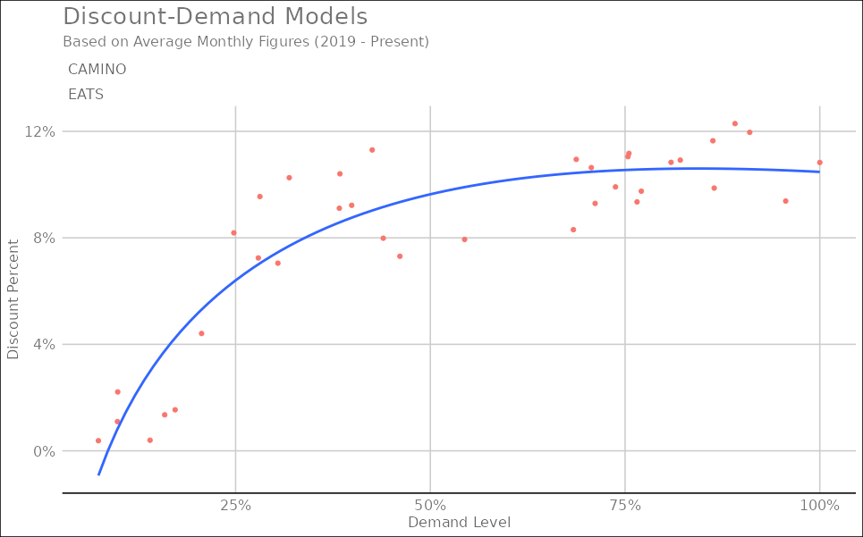
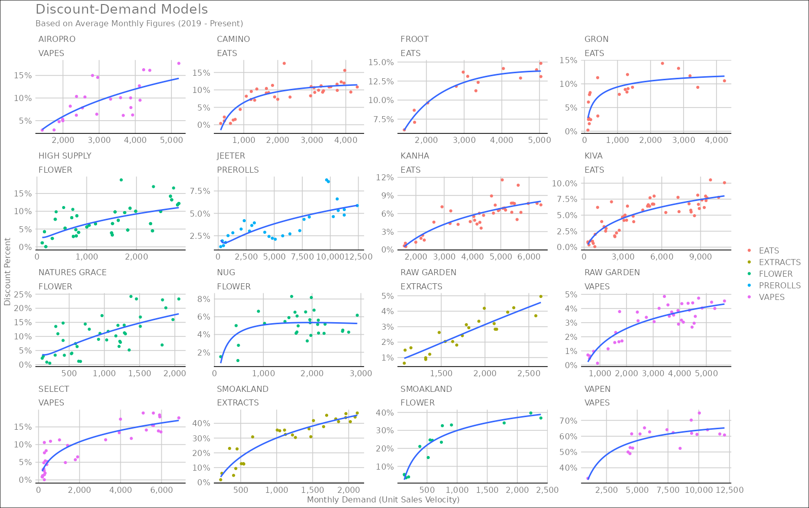

Here are some basic facts about Discount Elasticity:
Discount elasticity is used to measure the relationship between a targetted decrease in price and demand and such discounts to price will affect the demand.
For elastic products, you can increase the discounts up to a certain point in order to expect an increase in demand.
For inelastic products, if you increase discounts past a certain point, you don’t expect increasing demand and therefore you experience overall losses in profit.
Most products in cannabis are elastic to a certain level of discounting, but inelastic after that point. This discount level should be the maximum level of discounting offered by retailers.
This work demonstrates the ability to determine by Brand and Category, whether products are price elastic (i.e. discounts drive velocity significantly) or whether discounts have limited impact on sales velocity1 (i.e. discounts decrease profits without significant impact on velocity).
Modeling the Relationship
First, let’s take a look at a higher level model that describes observed discounts across all Cannabis Flower products and changes in weekly sales velocity2.

Extracting a Usable Model
Next let’s break this model down to the most useable form: a model for a particular brand and category. Using Camino edibles, a very popular product segment, the following model is fitted to the data:

The following insights can be extracted from Camino’s discount demand model:
The point of discount elasticity for Camino is slightly under 12% discount level. This means that any discount above 12% is not driving higher demand and only eating profits (on average)
Additionally, if you’re discounting level is below 4%, the expected demand level is <25%, meaning there’s a lot of demand left on the table
For instance, going from 4% discount to 8% discount should double your expected sales velocity with the proper marketing; however to acheive the same doubling of sales velocity at 9% requires going up to 11% only
The higher your discounting already is, the more marginal your expected increase in demand will be with additional increases in discount
Expanding this Work
As you can see from the next chart, we can derive these models at scale for a large number of popular brands and product categories. Each brand has it’s unique model that describes differing demand and discount relationships, however, all suggest that these models can be used to estimate the maximum discount level and expected demand gains from changes in discounts up until that point:
